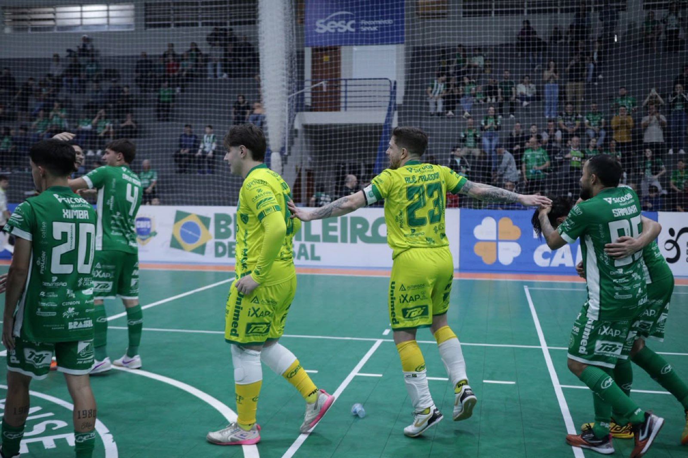

Com uma grande atuação, a Prefeitura de Chapecó/Chapecoense/Unochapecó goleou o Fazenda (PR) por 5 a 1, na noite deste sábado (10), no ginásio do SESC, em Chapecó. A partida valeu pela última rodada da primeira fase do Campeonato Brasileiro de Futsal. Com o resultado, o Verdão das Quadras terminou em terceiro lugar e vai encarar o sexto nas quartas de final.
A Chape Futsal foi no embalo do apoio da torcida e pressionou o adversário desde o início. A bola insistia em não entrar, mas depois que passou pelo goleiro paranaense a rede não parou de balançar. O time verde-branco abriu o placar aos 15’05”, com Eduardo. O segundo saiu 49 segundos depois com Ximba. Eram jogados 15’54”. Kassula e João Camilo ampliaram aos 16’48” e aos 18’21”, respectivamente. Pelé descontou aos 19’48”.

No segundo tempo, a Chapecoense soube administrar a boa vantagem construída na primeira etapa. O Fazenda teve mais posse de bola, mas sem colocar em xeque a vitória dos anfitriões. Os visitantes apostaram no goleiro-linha, mas foram vazados mais uma vez. O goleiro Alê Falcone, aos 13’32”, marcou o quinto dos donos da casa e deu números finais ao confronto.
O triunfo no SESC deixou a Chapecoense em terceiro lugar com 15 pontos, ultrapassando o próprio Fazenda, que tinha 15, no confronto direto, e o São João do Jaguaribe (CE), que tinha 13 e ficou com 14 por ter empatado em casa por 1 a 1 com o Sorriso (MT). Assim, o Verdão das Quadras jogará o mata-mata com o Criciúma, que empatou com o São José (AP), no Sul do Estado, e somou 12 pontos. A ida será fora e volta, em casa.
Os outros duelos são Atlético-PI (1º) x Sorriso (8º), Traipu (2º) x Magé (7º) e Fazenda (4º) x Jaguaribe (5º).
Fotos: Chape Futsal